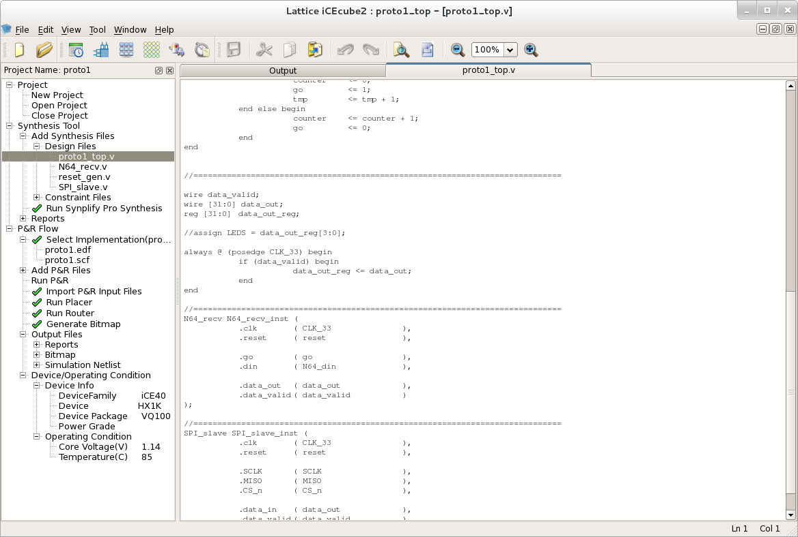

The FPGA market is one of those classical markets where there are two players who have nearly 100% market share, e.g. PC processors (Intel and AMD), graphic cards (NVIDIA and ATI), ... The two mayor players on the FPGA market are Xilinx and Altera. Both of this two companies follows their rival very closely. When one company announces the next big thing, support for new technology or improvement to their current products, the other will shortly follow with similar announcement.
This tempo of development has brought the two main programs of these two rivals at very high level. There is a tool (Altera Qsys and Xilinx Vivado) which lets you build a system from standardized building blocks with standardized interfaces (Altera Avalon and ARM AXI). They both offer a large palette of IP ready to be used with their program. The debugging of the designs is simplified with good integration with simulators (Altera by default uses Mentor Graphic ModelSim, Xilinx has its own XSim, but it can also use ModelSim) and integrated logic analysers (Altera SignalTap and Xilinx ILA) are a great help when simulation works but real world FPGA does not.
I have an idea for my next hobby project which needs an FPGA (actually, CPLD will do just fine) for translating one communication protocol to another. The board will be an expansion board for Raspberry Pi, so the cost should be really low (I have in mind something bellow 5$). Altera and Xilinx do not offer anything in this price range, so I recalled Lattice ads. The iCE40 series are small FPGAs with few K logic cells and low prices. Another advantage for my project is possibility to configure it by SPI, something that most CPLDs does not support.
So I ordered iCEblink40HX1K Evaluation Kit.
First I tried installing the iCEcube2 software on Centos 7 which is my usual working environment. The installation went smoothly. The problem started to occur when the licence manager was unable to find network adapter MAC address:
Error: License checkout failed.
Invalid host.
The hostid of this system does not match the hostid
specified in the license file.
Feature: LSC_ICECUBE2_A
Hostid: xxxxxxxxxxxx
License path: /home/jan/opt/lscc/license.dat:
FLEXnet Licensing error:-9,57. System Error: 19 "(null)"
For further information, refer to the FLEXnet Licensing End User Guide,
available at "www.macrovision.com".
The problem is that the FLEXnet software searches for the MAC address of the eth* interface, while Centos uses completely different naming. Being familiar with the problem, I used a trick to create a new interface named eth0 (you should replace the x's with desired MAC address):
modprobe dummy
ip link set name eth0 dev dummy0
ifconfig eth0 hw ether xx:xx:xx:xx:xx:xx
After setting everything up, a view on the iCEcube2 showed before me.

It is a little Spartan but it has all basic functions the FPGA developer needs. The text editor lacks code coloring, auto-complete but there is a chance to use a 3rd party text editor. The text in the output window is light violet on white background and it should be changed to something more visible.
The iCE family of FPGAs lacks JTAG port. Instead, user programs SPI Flash memory through an USB to SPI converter and then the FPGA boots from SPI memory. That means that debugging is done or by using 4 LEDs on the side or with oscilloscope, not a very user friendly approach.
Under Linux, there is additional problem:
Note : The Integrated Aldec Active HDL simulation software and iCEcube2 programming
tools are only available in windows platform.
Well this is it for now, i need to switch to Windows. Merry Christmas to everybody!
All trademarks and registered trademarks are the property of their respective owners.